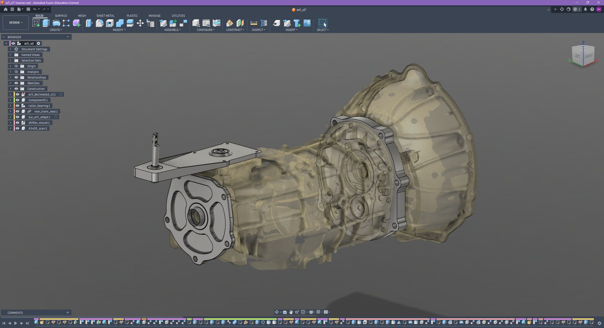
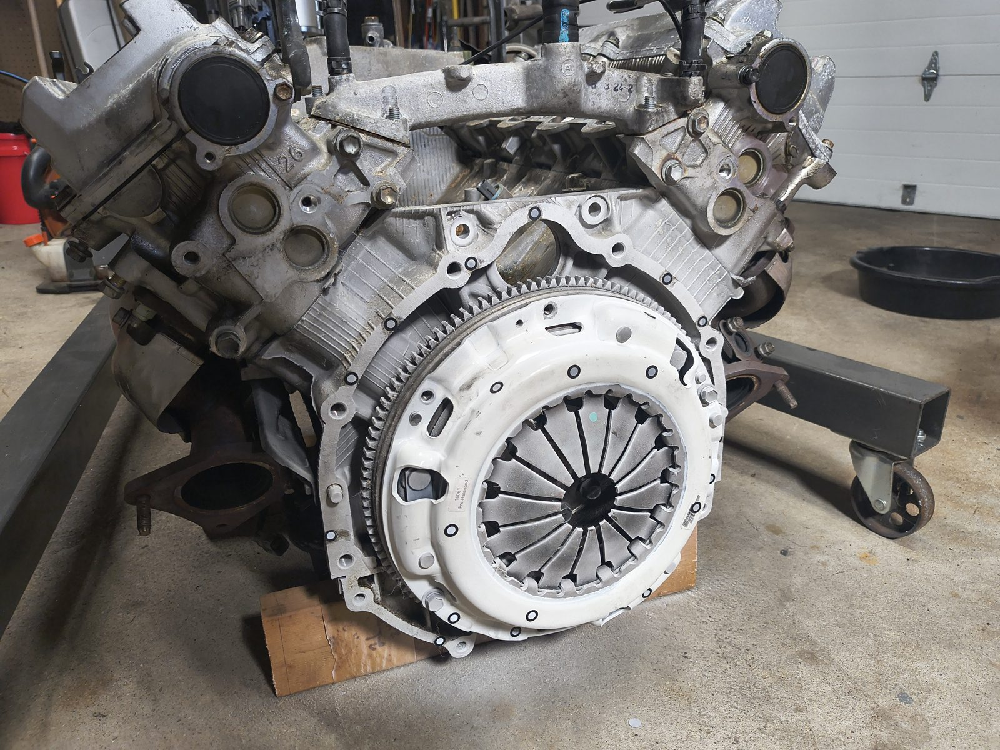
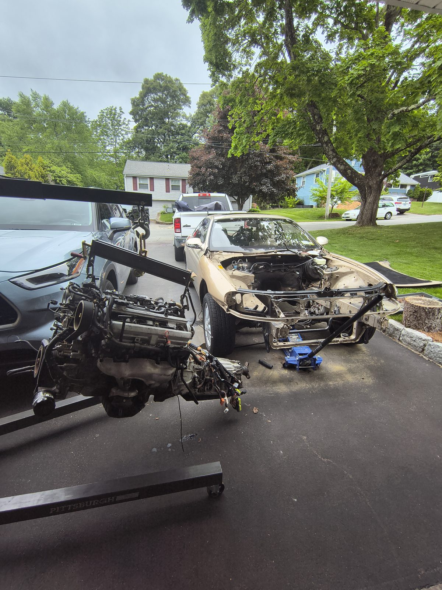

Automotive · CAD · CNC · Electronics
1UZ Project
My 1993 Lexus SC400 keeps its 1UZ-FE V8, but the factory A340E automatic is coming out for an Aisin AR5 five-speed manual from a GMC Canyon. I scanned both transmissions, designed the adapter parts around the scans in Fusion, and am checking the fit with 3D-printed prototypes. The car is also getting an electric fan conversion and an ESP32-based CAN-bus digital dash I programmed and built.
- Role
- Scanning, design, prototyping
- Vehicle
- Lexus SC400 · 1UZ-FE
- Tools
- Fusion · 3D scanning · 3D printing · ESP32
- Material
- 6061-T6 (edit)
- Status
- In progress (edit)
AAR5 Manual Transmission Adapter
No manual transmission was ever offered behind the 1UZ in the SC400, so nothing bolts up. The AR5 comes from a GMC Canyon, which means a different bellhousing pattern, input shaft length, and shifter location, plus a 4WD tail housing the SC400 can't use. I 3D-scanned the AR5 and the original A340E and built the assembly around the scans.
Add why you picked the AR5 over other options and the main constraints you had to hit: input shaft engagement, pilot bearing, clutch clearance, crossmember, and driveshaft length.
Drag to rotate, scroll or pinch to zoom. These are the Fusion models, without the transmission scans.
Front adapter plate
Design approach, how you located the bolt patterns (measured, OEM drawings, scanned), tolerances on the dowel and bore, plate thickness and why, and FEA if you did any.




4WD to 2WD conversion backplate
What the transfer case delete required: output shaft support, seal, speedo drive, and how the backplate mounts.
Drag the slider to compare. Good uses: the 4WD case next to your backplate, or a stress plot of the original design next to the revised one.
Shifter relocation
Where the shifter ended up compared with where it needed to be, the linkage design, and how you checked for binding and feel.
BElectric Fan Conversion
Why you dropped the mechanical fan, how you sized the fan (CFM, current draw), how it's controlled (thermo switch, relay, PWM from the Arduino?), and the shroud or bracket you made.
CESP32 CAN DigiDash
An Arduino-framework ESP32 that reads the car's CAN bus and drives a digital gauge display.
Hardware (CAN transceiver, display), which messages you read and how you decoded them, refresh rate, and the enclosure.